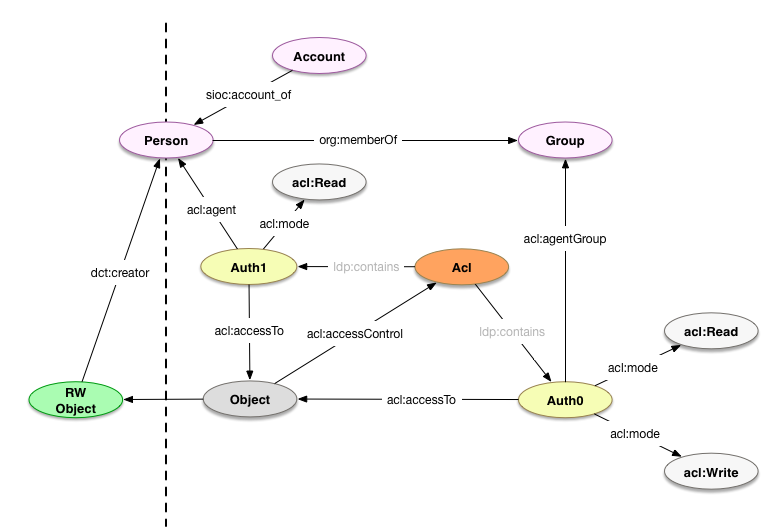

Permissions
Introduction
The permissions model represents the interaction between managed Resources and Agents' actions.
Use cases
- Access controls
- Visibility levels: public, institution, private
NOTES:
- The following are open questions (or
TODOs) about how to handle this in the model:
Model

foaf:Agent
See Agents.
foaf:Account
See Accounts.
fedora:Resource
| Field | Predicate | Recommendation | Expected Value |
|---|---|---|---|
| has ACLs | acl:accessControl |
MAY | fedora:Resource, webacl:Acl (see notes) |
NOTES:
- The type of expected instances are Fedora-specific, and may be
fedora:Resourceorwebac:Acl(see comment on projecthydra/hydra-head#354)
acl:Authorization
| Field | Predicate | Recommendation | Expected Value |
|---|---|---|---|
| to | acl:accessTo |
SHOULD (unless acl:accessToClass provided) |
fedora:Resource |
| to all in | acl:accessToClass |
SHOULD (unless acl:accessTo provided) |
rdfs:Class |
| agent | acl:agent |
SHOULD (unless acl:agentGroup or acl:agentClass provided) |
foaf:Agent |
| agent class | acl:agentClass |
MAY (see https://jira.duraspace.org/browse/FCREPO-2275) | rdfs:Class |
| agent group | acl:agentGroup |
SHOULD (unless acl:agent or acl:agentClass provided) |
foaf:Group |
| access mode | acl:mode |
SHOULD | acl:Access |
Usage
NOTES:
- Access controls are defined using WebAccessControl.
- Fedora makes some specific assumptions about WebAccessControl.
- See WebAC Authorization Delegate and its subpages for more detail.
- Fedora only supports the following subclasses of
acl:Access:acl:Read(includeshyacl:Discover) andacl:Write.
- IP-based authentication/authorization has not been addressed using this model yet. See #52.
- External groups are understood to be never important to the repository directly. If they are, then they need to be recreated within the scope of the repository, either automatically (through synchronization/mapping) or manually.
Defining new permissions
</rest/acls> a fedora:Resource .
</rest/groups/group0> a foaf:Group ;
foaf:member <http://example.org/staff#beatrice> .
</rest/acls/auth0> a fedora:Resource, acl:Authorization ;
acl:accessToClass fedora:Resource ;
acl:mode acl:Read, hyacl:Discover ;
acl:agent <http://example.com/people#alice> .
</rest/acls/auth1> a fedora:Resource, acl:Authorization ;
acl:accessToClass fedora:Resource ;
acl:mode acl:Read, acl:Write, hyacl:Discover ;
acl:agentGroup </rest/groups/group0> .
References to permissions
</rest/some/object> a fedora:Resource, pcdm:Object ;
acl:accessControl </rest/acls> .